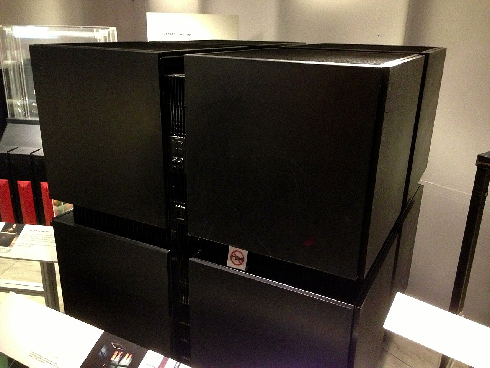

Welcome to the Mimms Museum’s digital archives. You are standing—either in person or in your mind’s eye—before one of the most visually stunning artifacts in the history of computing. It is a five-foot-tall black cube, divided into eight smaller cubes. It’s dark, monolith-like, and if you look closely at the semi-translucent front panels, you’ll see thousands of tiny, flickering red lights pulsing like a digital heartbeat.
[Pause 3 seconds. The hum deepens.]This is the Connection Machine Model 1, or the CM-1. Released in 1985 by Thinking Machines Corporation, it didn't just look like it was from the future; it was designed to rethink what a computer was from the ground up. Today, we’re going to step inside this black box and understand the vision of the man who built it, the woman who designed its skin, and the 65,536 processors that lived inside.
[Sound of a heavy mechanical door latching shut.]To understand why the CM-1 exists, we have to talk about Danny Hillis. In the early 1980s, Hillis was a PhD student at MIT, and he was frustrated. He felt that the way we were building computers was fundamentally "dumb." Almost every computer since the 1940s followed the Von Neumann architecture: a single, fast processor that pulls one piece of data from memory, does one calculation, and puts it back. It was a bottleneck—a one-lane highway for information.
Hillis wanted a computer that worked like a brain. He didn’t want one genius processor; he wanted sixty-five thousand simple processors working together in a massive, interconnected web. He called it "Massive Parallelism." This machine wasn’t meant for spreadsheets or word processing. It was meant for the hardest problems in the world: artificial intelligence, protein folding, and simulating the very birth of the universe.
[A rhythmic, pulsing synth track begins to swell under the voice.]Take a step closer to the cube. Notice the texture of the surface. This isn’t a standard server rack. In the 80s, supercomputers like the Cray-1 were curved and padded like high-end furniture. But Thinking Machines Corporation wanted something more... philosophical. They hired a young designer named Tamiko Thiel. She was told to create a machine that "looked like what it did."
The result was this "cube-of-cubes" design. The CM-1 is physically an 8-cube—four cubes on the bottom, four on the top. This wasn't just for show. The internal network of the processors was organized as a 12-dimensional hypercube. Thiel wanted the physical chassis to reflect that complex geometry. She chose black to make the machine look invisible when the lights were off, and she insisted on the semi-transparent panels so you could see the red LEDs inside.
[The sound of thousands of tiny electrical clicks, like rain on a tin roof.]Those lights... they weren’t just status indicators. They were a window into the machine’s thoughts. Each light represented a group of processors. When the machine was working on a problem—say, simulating fluid dynamics—the lights would ripple and flow across the face of the cube. If the code was stuck in a loop, the lights would freeze. If the machine was idle, they would shimmer. It made the CM-1 feel alive. It made the invisible work of computation visible to the human eye.
[Music shifts to a more technical, steady beat.]Now, let’s talk about the guts. Inside this cube were 65,536 bit-serial processors. To put that in perspective, your modern smartphone has about 8 to 12 processors. The CM-1 had sixty-five thousand. But they were simple. Individually, they were weak. But because they were connected through a custom-built router system called the "B-line," they could communicate across that 12-dimensional hypercube in milliseconds. This was SIMD architecture—Single Instruction, Multiple Data. You could tell all 65,000 processors to do the exact same thing to different pieces of data at the exact same time.
Imagine you’re trying to find a specific grain of sand on a beach. A traditional computer is like a single person with a magnifying glass, looking at one grain at a time. The Connection Machine is like 65,000 people, each picking up a grain simultaneously. The search is over in an instant.
[Sound of a high-pitched digital whine rising and then leveling out.]But there was a catch. To talk to this beast, you needed a "front-end" computer. The CM-1 didn't have a monitor or a keyboard of its own. It sat in the corner of the lab like a silent deity, while researchers programmed it using a Symbolics Lisp Machine—another iconic piece of hardware in our collection. They wrote in specialized languages like *Lisp or CM Fortran. They weren't just writing code; they were choreographing a massive digital ballet.
In the late 80s, the CM-1 was the darling of the AI world. It was the centerpiece of the Thinking Machines headquarters in Cambridge, Massachusetts. The company culture was legendary—they had "playrooms" for the engineers, and they attracted the brightest minds from MIT and Caltech. Even Richard Feynman, the Nobel-winning physicist, spent his summers there, helping them optimize the router network and painting murals on the walls.
[Music fades to a more somber, reflective tone.]So why don't we see black cubes in every data center today? Why did Thinking Machines eventually file for bankruptcy in 1994? The answer is as complex as the machine itself. The CM-1 was brilliant, but it was hard to program. Thinking in parallel is difficult for humans. While TMC was building these massive, beautiful cubes, the "traditional" processors—the ones Hillis thought were dumb—were getting faster at an exponential rate. By the early 90s, a cluster of standard workstations could often outperform a multi-million dollar CM-1 for a fraction of the cost.
But the legacy of the CM-1 lives on. Every time you use a modern GPU—the kind used for high-end gaming or training large language models like GPT—you are using the direct descendants of the massively parallel ideas pioneered inside this cube. We finally caught up to Danny Hillis's vision. We just didn't need the 12-dimensional hypercube to do it.
As you leave this exhibit, take one last look at the red lights. They are dimmer now, preserved here in the museum, but for a brief moment in the 1980s, they were the brightest signal we had that the future of computing was going to be parallel, it was going to be massive, and it was going to be beautiful.
[The electronic hum fades out, replaced by a single, resonant chime. Silence.]The Connection Machine CM-1 was a radical departure from the sequential computing paradigm. By utilizing 65,536 simple processors working in concert, Thinking Machines Corporation aimed to emulate the parallel processing power of the human brain. Its iconic "cube-of-cubes" aesthetic, designed by Tamiko Thiel, remains one of the most celebrated examples of industrial design in the history of technology, turning a complex mathematical topology into a physical masterpiece.
